Case 01 · Антиплагиат
Антиплагиат
Спроектировал контекстного AI-ассистента прямо на дашборде отчёта: добавил понятный человеческий статус-вердикт, zero-prompt карточки-подсказки («Где найден ИИ?», «Советы по рерайту»), локализацию машинных фрагментов по главам и интерактивный переход к нужному месту документа в 1 клик.
После проверки пользователь видит цифры отчёта, но остаётся один на один с вопросом «Что делать дальше?»:
01
Растерянность от цифр
Показатели «Оригинальность 46.53% ниже порога 70%» и «Присутствует ИИ-генерация» пугают пользователей, но не дают ответа, какие конкретно абзацы признаны сгенерированными.
02
Ступор перед пустым инпутом
Обычное поле ввода чата вызывает барьер чистого листа: люди не знают, как сформулировать вопрос нейросети и какие данные она способна предоставить по тексту.
03
Высокий Drop-off
Пользователи закрывали сервис сразу после беглого взгляда на проценты, так и не перейдя к глубокому изучению отчёта и не совершая целевых действий.
04
Разные цели аудитории
Студентам важно уложиться в норматив кафедры, преподавателям — пресечь фальсификацию (микрошрифт, скрытые символы), а авторам — избавиться от машинного тона статьи.
Три ключевых сегмента пользователей и их реальные задачи:
Студенты
Студенты и магистранты
Когда работа не проходит норматив, я хочу увидеть, какие конкретно главы признаны ИИ и получить понятные советы по рерайту, чтобы вовремя защитить работу без риска дисквалификации.
Преподаватели
Преподаватели и рецензенты
Когда студент показывает пограничный результат, я хочу быстро отделить корректные цитаты от плагиата и сразу узнать о попытках обхода системы (замена символов, микрошрифт, маскировка).
Авторы / SEO
Авторы, редакторы и копирайтеры
Когда я сдаю коммерческий лонгрид, я хочу локализовать машинные обороты по разделам и отделить внешние совпадения от самоцитирования, чтобы статья успешно ранжировалась в поиске.
Бенчмарки
Конкурентный анализ
Изучил практики рынка: ТЕКСТ.РУ (версионность и история правок), Paperpal (zero-prompt старт без ввода текста), GPTzero (вердикт на человеческом языке и топ подозрительных фраз).
1. Человеческий вердикт: «Если сразу при открытии покажем в чате понятный вердикт („работа в норме“ или „требуется доработка“), то снимем первую тревогу пользователя, потому что переведём абстрактные проценты в ясный статус».
2. Zero-prompt подсказки: «Если добавим готовые карточки-саджесты („Где найден ИИ?“, „Советы по рерайту“, „Объяснить маркеры ИИ“), то вовлечём пользователя в диалог в 1 клик и уберём ступор перед пустым полем ввода».
3. Локализация риска: «Если ассистент будет подсвечивать конкретные главы документа с максимальным риском (например, „Раздел 1.2 — 80% машинного тона“), пользователь перестанет смотреть на общие графики и пойдёт исправлять конкретный текст».
4. Прямой переход к тексту: «Если сделаем в теле ответа интерактивную кнопку перехода к нужной главе („Посмотреть Раздел 1.2“), путь до правки сократится до одного клика без ручного листания всего документа».
Одиночество пользователя перед графиками: Экран выдавал набор процентов («Оригинальность 46.53%», «ИИ-генерация»), но не давал никакой интерпретации. Пользователь не понимал, много это или мало для его норматива.
Отсутствие инструмента работы с ошибками: Сервис констатировал факт проблемы («Присутствует ИИ-генерация!»), но не объяснял, почему алгоритм счёл текст машинным и в каких разделах сконцентрирована проблема.
Высокий барьер для правок: Чтобы найти подозрительное место, приходилось вручную просматривать десятки страниц текста, не понимая приоритетов исправления.
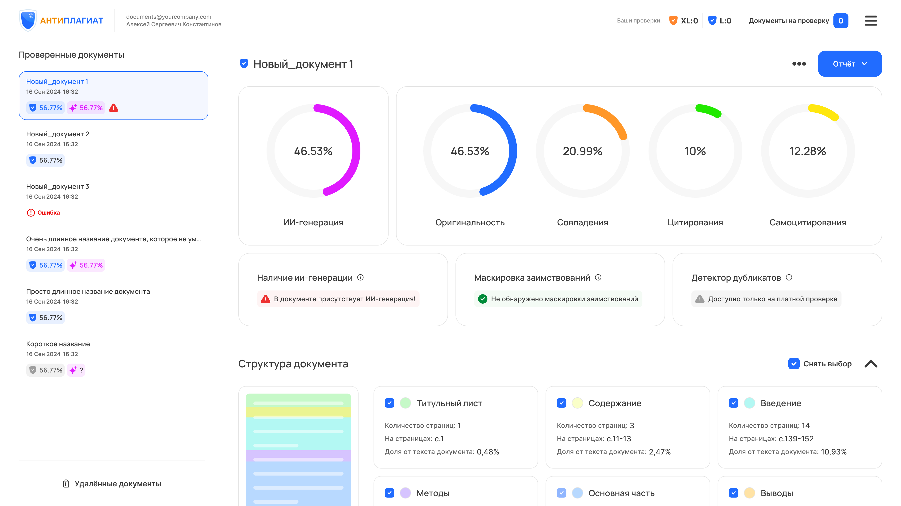
До · отчёт с сухими цифрами без подсказок и ассистента
Человеческий статус и саджесты: Ассистент сразу показывает понятный статус («Требуется доработка: оригинальность 46.53% ниже порога 70%») и три zero-prompt кнопки: «Соответствие нормам порога», «Советы по рерайту», «Объяснить маркеры ИИ».
Стилистический разбор аномалий: В ответе ассистент анализирует смену тона текста (на примере описания Drupal: резкий переход от разговорных фраз к академическим дублям) и даёт чёткую рекомендацию, как сократить фрагмент.
Переход в отчёт в 1 клик: В конце ответа встроена кнопка «Посмотреть Раздел 1.2», которая переносит пользователя ровно к проблемному абзацу в структуре документа.
Удобное сворачивание: Если пользователь хочет сосредоточиться на чтении документа, ассистент плавно закрывается в минималистичную кнопку вызова в углу экрана.
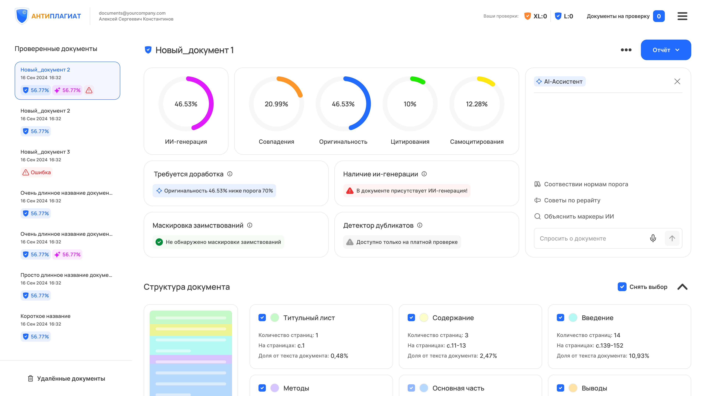
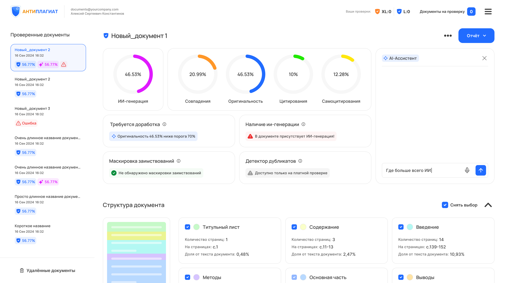
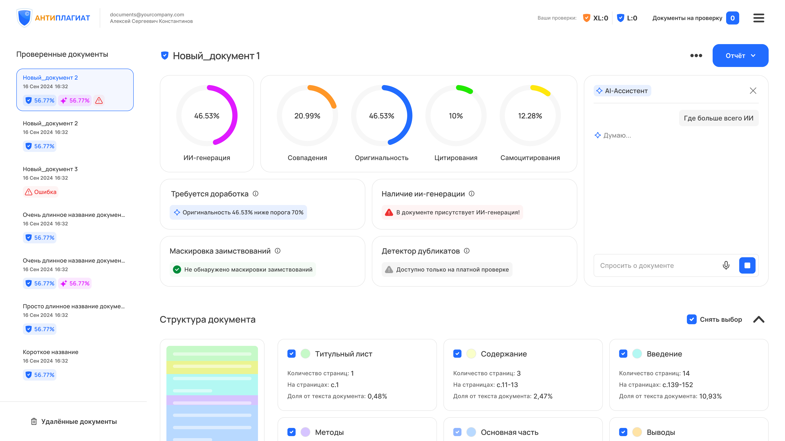
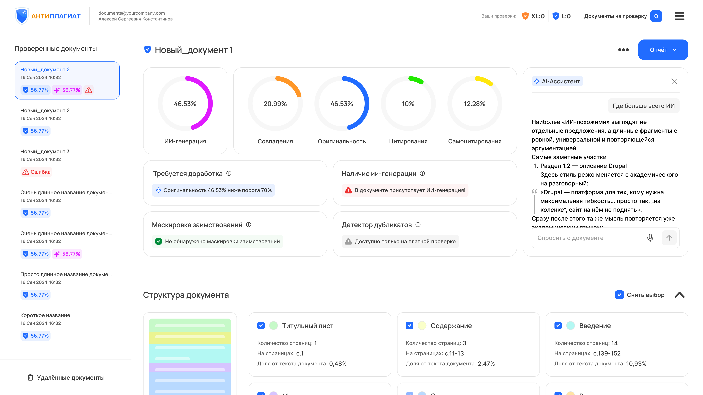
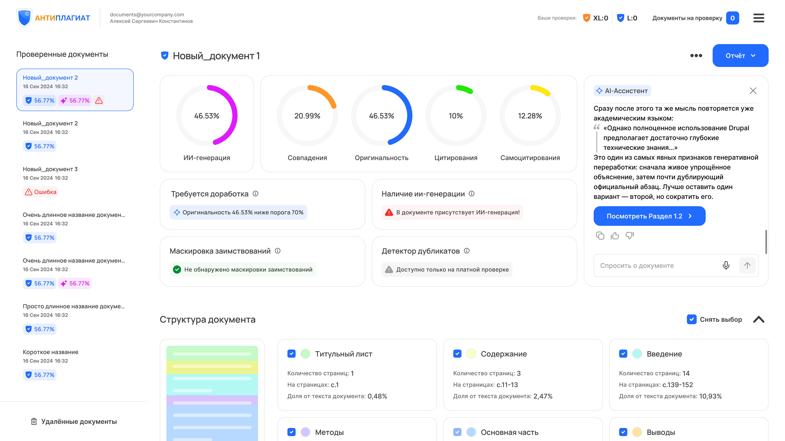
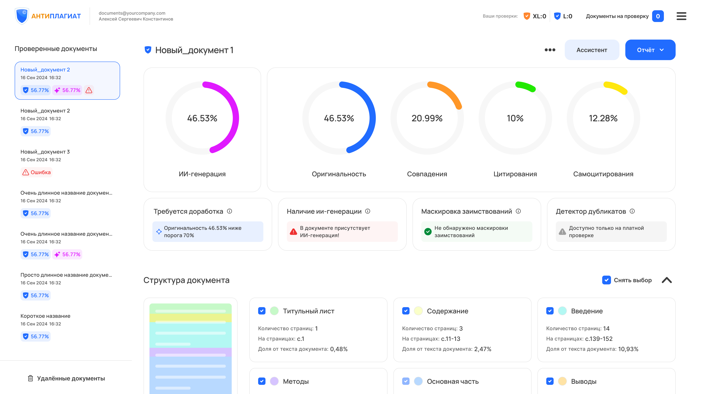
01 / 06
01 · Стандартное состояние: вердикт и zero-prompt саджесты
Планшетный интерфейс (1133×744): Ассистент открывается в виде аккуратной сплит-панели, которая не перекрывает левую навигацию по документам и сохраняет контекст чтения отчёта.
Мобильный опыт (375×840): Ассистент спроектирован в формате выдвижного Bottom Sheet, до которого удобно дотягиваться большим пальцем одной руки. Саджесты скроллятся горизонтально, а поле ввода всегда зафиксировано над клавиатурой.
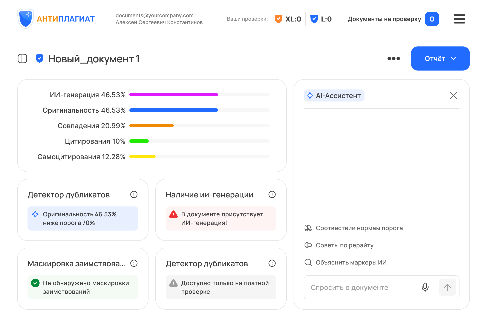
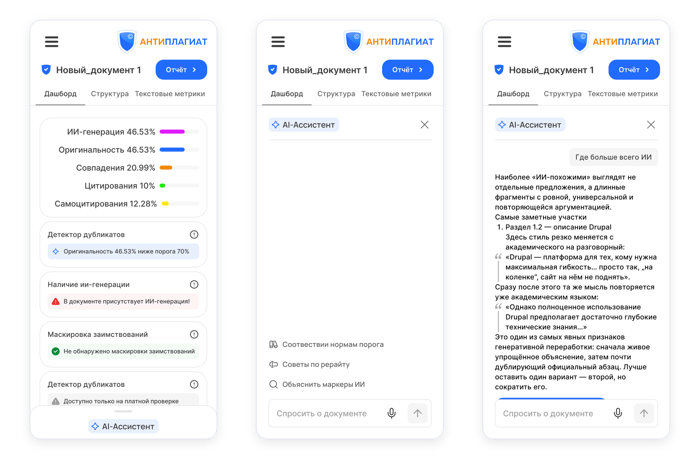
01 / 02
01 / 02 · Tablet: сплит-панель ассистента без потери контекста
14 состояний поля ввода ассистента: Спроектировал интерактивный компонент инпута с поддержкой текстового и голосового ввода, состояний наведения, фокуса, заполненности, анимации размышления нейросети, обработки ошибок и блокировки.
Модульная библиотека компонентов: Собрал токены типографики, фирменной палитры (синий #216cff, фиолетовый AI-акцент, статусная индикация), карточки метрик, статусные бейджи, кнопки действий и мобильные табы.
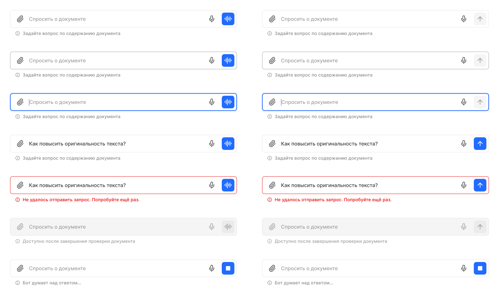
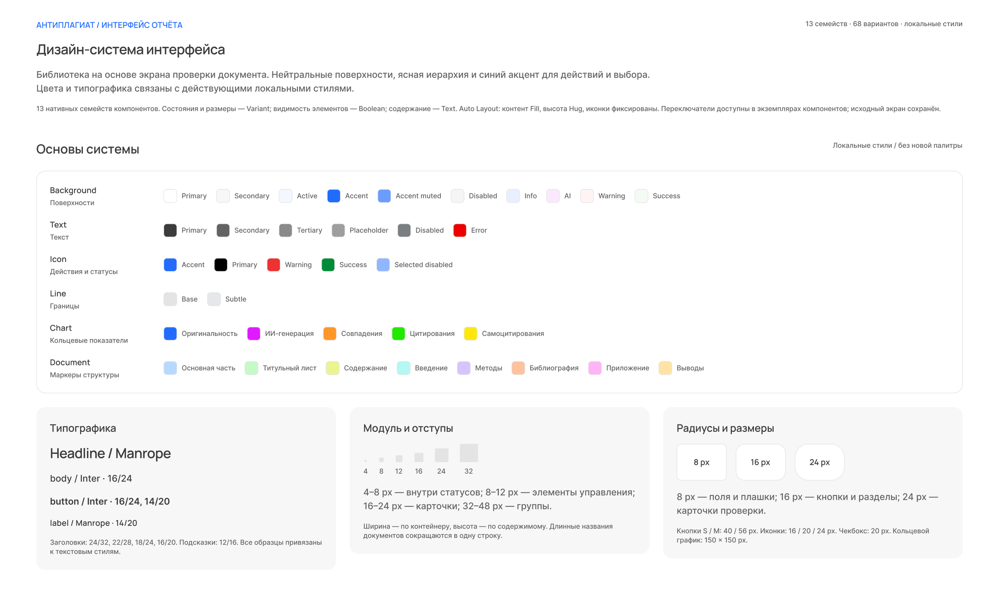
Комплекс продуктовых и исследовательских решений:
- UX-дискавери и JTBD: выявил боли 3 аудиторий (студенты, преподаватели, авторы) и сформулировал конкретные Job Stories.
- Конкурентный бенчмаркинг: проанализировал ТЕКСТ.РУ, Paperpal и GPTzero, переняв лучшие паттерны zero-prompt и человеческих вердиктов.
- Продуктовые гипотезы: протестировал взаимосвязь вердикта, саджестов и кликабельных переходов со снижением drop-off.
- Сценарий ассистента (Web 1920×1080): детально проработал флоу от открытия диалога до перехода к главе документа.
- Адаптивность (Tablet & Mobile): спроектировал сплит-панель для планшетов и выдвижной Bottom Sheet для смартфонов.
- Локальная дизайн-система: разработал интерактивную матрицу компонентов, включая 14 состояний инпута с голосовым вводом.
Внедрение AI-ассистента трансформировало статичный отчёт в активный рабочий инструмент: пользователи больше не паникуют из-за процентов оригинальности, сразу получают понятный план правок и переходят к редактированию текста в один клик.
75%
Пользователей взаимодействуют с AI-ассистентом прямо со стартового экрана
-40%
Снижение Drop-off: пользователи перестали бросать отчёт после первого взгляда
1 клик
Мгновенный переход из ответа ассистента к проблемному разделу в документе
TAXI TROIKA
Next case →
Sber CIB